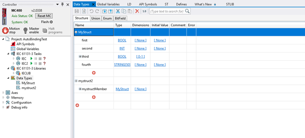

The Data Type Editor tool is used to define user-defined global data types in Motion Perfect. These data types can be used across IEC Variables and Global variables tools within Motion Perfect.
To open this tool, ensure that there is at least one IEC program or HMI design in the project, then double-click on Data Types item in the controller tree.

The tool normally displays all currently defined data types along with their properties. It also includes to export and import data types.
To add new data type, click the plus sign at the end of the grid row. To add member to an existing data type, click the plus sign after its last existing member.
Data types can be of several kinds: Structures, Unions, Bit Fields or Enums.